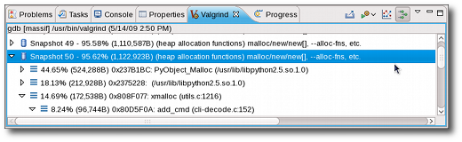

| Using Massif |

|
|

|
| Using Memcheck |
|
Using Cachegrind |
Using Massif
Massif is a Valgrind tool that measures how much heap memory an application uses. Heap memory profiling is useful in determining how to reduce the memory usage of an application. For more information about Massif, refer to
http://www.valgrind.org/docs/manual/ms-manual.html.
To use Massif, navigate to Profiling Tools > Profile Configurations to access the
Profile Configurations
menu. Open the
Valgrind Options
tab and choose Massif from the Tool to run: drop-down list.

Analyzing Massif Profile Results
Massif distills a large volume of data. The Valgrind plug-in for Eclipse presents three ways to view this data:
-
Snapshots Table. Each entry in the Valgrind view contains useful information about each snapshot taken by Massif during the profile run. The peak snapshot is highlighed in bold text.

-
Heap Tree. Detailed snapshots are denoted by the Show Heap Tree icon (
 ). Double-clicking any of these snapshots will modify the Valgrind view to display all detailed snapshots. Collapsing each detailed snapshot in this view will display a heirarchy of function calls (i.e. heap tree) detailing the heap allocations used during the snapshot.
). Double-clicking any of these snapshots will modify the Valgrind view to display all detailed snapshots. Collapsing each detailed snapshot in this view will display a heirarchy of function calls (i.e. heap tree) detailing the heap allocations used during the snapshot.

Some functions within the heap tree list a related source file. Double-clicking these functions will open the listed source file and place the insertion point on the specific function responsible for the call.
You also can also toggle the Show Heap Tree shortcut on the Valgrind view toolbar to switch between
Snapshots Table and
Heap Tree views.
-
Heap Chart. The information in the snapshots table is also available in line chart form, displayed in the
Heap Chart window. Clicking any data point in the chart will highlight its corresponding snapshot in the snapshot table. Double-clicking on a data point that corresponds to a detailed snapshot will open an editor to one of its function calls.

If a detailed snapshot contains calls to multiple source files (or multiple functions within a source file), double-clicking its corresponding data point on the heap chart will open the
Open Allocation Function Call
menu. Double-clicking a function from the
Open Allocation Function Call
menu will open its corresponding source file and place the insertion point on the specific function responsible for the call.
Configuring a Massif Profile Run
To configure a Massif profile run, navigate to Profiling Tools > Profile Configurations to access the
Profile Configurations
menu. In the
Valgrind Options
tab, navigate further to
Massif Options
.

The
Massif Options
tab allows you to configure the following Massif options:
-
profile heap
specifies whether or not heap profiling should be performed. This option is enabled by default.
-
profile stack
specifies whether or not stack profiling should be performed. This option is disabled by default, as it significantly slows down Massif.
-
heap allocation threshold
specifies the significance threshold for heap allocations (as a percentage). Allocation tree entries that account for less than this will be aggregated. The default value for this option is 1%.
-
time unit
specifies what time unit should be used for the profile. The possible values for this are instructions (default), milliseconds, or bytes.
-
max snapshots
specifies the maximum number of snapshots that the profile should take. The default value for this is 100.
- The
allocated functions
field is identical to the Massif command-line option
--alloc-fn=, which allows you to specify any function to be treated as a heap allocation function. To add or remove functions to this field, use the New or Remove buttons. You can specify multiple functions in this field.
-
administrative bytes per block
is identical to the Massif command-line option
--heap-admin=, which specifies the number of administrative bytes (per block) to use if heap profiling is enabled. The default value for this option is 8.
-
allocation tree depth
is identical to the Massif command-line option
--depth=, which specifies the maximum depth of the allocation trees recorded for detailed snapshots. The default value for this option is 30.
-
allocation peak inaccuracy
is identical to the Massif command-line option
--peak-inaccuracy=. Massif records a peak only when the global memory allocation size exceeds the previous peak by the specified percentage value of this option. The default value for this option is 1.
-
detailed snapshot frequency
specifies the frequency at which Massif should take detailed snapshots. The default value for this option is 10; to specify that each snapshot should be detailed, set this option to 1.
-
minimum heap block alignment
specifies the minimum alignment (i.e. size) of heap blocks.
For more information about each Massif option in the Valgrind plug-in for Eclipse, refer to man valgrind.
|
|

|
|
| Using Memcheck |
|
Using Cachegrind |